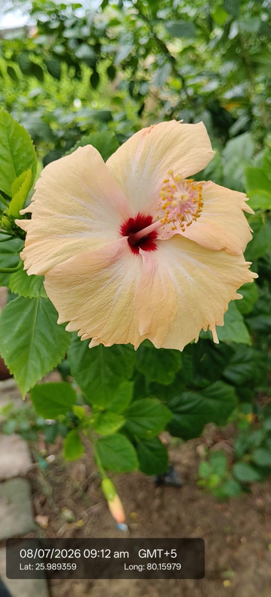

| Scientific name | Hibiscus rosa-sinensis L. |
|---|---|
| Type | Shrub |
| Category | Shrubs |
Habitat & Growing Conditions
- Commonly grown in gardens, parks, home landscapes, and tropical to subtropical regions. It prefers warm climates and well-drained fertile soil.

Economic Importance
- Hibiscus is an evergreen flowering shrub belonging to the family Malvaceae.
- It is widely cultivated as an ornamental plant because of its large, colorful flowers.
- The flowers are used in religious ceremonies and temple offerings.
- Hibiscus flowers and leaves are used in Ayurvedic and traditional medicine.
- The flowers are used to prepare herbal tea and natural health products.
- Leaf and flower extracts are commonly used in herbal hair oils and shampoos.
- The plant attracts bees, butterflies, and other pollinators.
- It is widely planted as a hedge and for landscape beautification.
- It grows easily with regular watering and sunlight.
- Hibiscus has high ornamental, medicinal, and economic importance.
Medicinal Importance
Medicinal notes pending.
Visual record03 photographs
